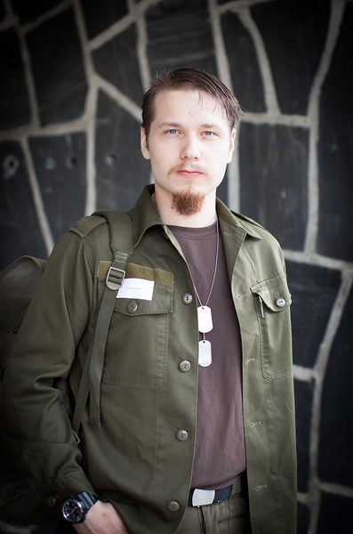
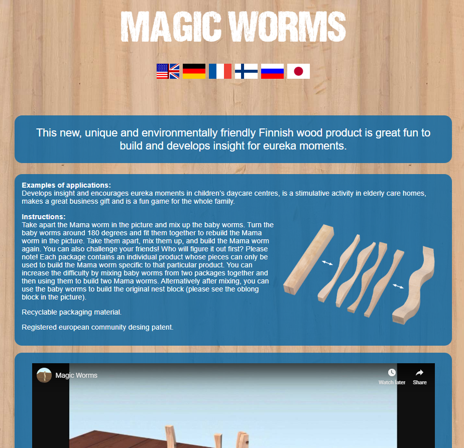
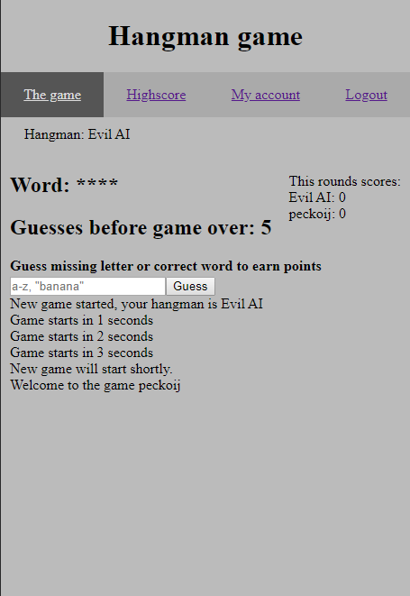

Jon Pekkonen
aka Peckoij
I was born in 1994 in Eastern Finland. My childhood and teens I lived in village called Kuortti.
After comprehensive school I attented general upper secondary school where I graduated with somewhat
average grades.
After that I worked in my fathers metalworkshop. In January 2014 I started my military service in
Finnish Defence Force.
In Autumn 2015 I began my studies in Jyväskylä University studying physics, math and programming.
After year I switched to Jyväskylä university of applied sciences where I'm currently studying to
become Batchelor in Business Information Technology. This webpage is part of those studies with aim
to
present my skills and previous projects to future employer.
Objectives
I'm looking for trainee position where I could improve my skills while working with professionals in
proper projects.
Especially place where I could do web application development with Javascript using React or Angular.
Skills
Language skills
I'm native Finnish speaker and I speak and write pretty well in English.
Programming languages
I have previously studied and used Java and Javascipt with various frameworks, including Angular,
Ionic, Node.JS and React.
Also I handle HTML and CSS without too much trouble. Currently I'm writing my thesis about security in web applications.
Looking at Databases I have experience with MongoDB and MySQL.

HTML and CSS
As part of my studies I made homepage for clients product "Magic Worms".
Site was created in co-operation with client, Kauko Sihvonen, with his wishes and needs in mind.
This project gives good view to my base skills in HTML5 and CSS3.
Clicking image takes you to site and link below to projects Git repository.
Magic Worms repository

Node.js and Angular7
I created this small web-game as final assignment of web program development course.
Game is your classic hangman game with simple Angular frontend. Game can be played online with
one or more players against computer hangman.
Backend is made with Node.JS and socket.io which was used for multiplayer aspect of game. UI is
pretty bland and boring since priority was on
creationg functional program and getting front and backend to work together properly.
Program fullfills PWA (Progressive web application) criteria and could be added to smartphones homescreen.
Game server is currently down due to low resources.
Hangman-game
Hangman-game git repository
Git
Using Git has become natural to me since I have used it on various projects, this site included.
As part of my studies I participated in group project where Git was necessary. This project
known as OddOgle had group of four. Two
programmers, content creator and marketing person.
For this project we used gitlab provided by JAMK. During project benefits of Git became
unquestionable.
My Github account
Agile development, Scrum ja Kanban
In previously mentioned OddOgle-project our group tried out both scrum and kanban in dev work.
Scrum was used for first three sprints after which we chose to include parts of Kanban so
working would be as efficient and pleasant to everyone as possible.
Work Experience
Worker in family business, Desomatic Oy
2013-2016
My work tasks were really varied including welding, painting, constuction work and IT-support.
During this time I have learned to look work and employment from emplayers viewpoint.
Janitor in Kuortti School, Pertunmaa Municipality
2012-2013
I worked as Janitors substitute during weekends and vacation times. Tasks included heating building, clearing snow and ice and checking building for problems.
Work was very indepentent and my responsibility was to keep building and it's occupants warm around the clock during winter months.
Education
Bachelor of Business information technology, JAMK University of Applied Sciences
2016-
Estimated graduation in spring 2022. Studies include programming, marketing and business courses.
Physics studies, Jyväskylä University
2015-2016
Courses in physics, math and programming.
NCO training, Finnish Defence Force
2014
Squad leader training and experience in leading people in various situations.
Matriculation examination, Heinola lukio
2010-2013